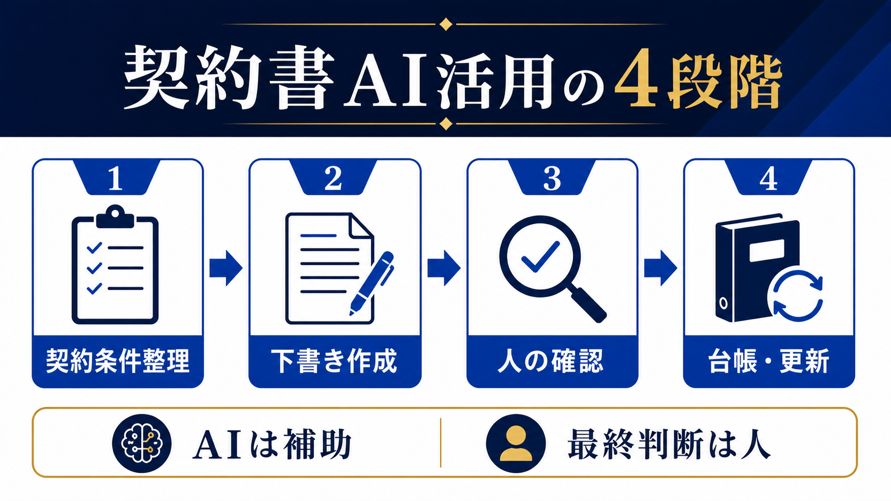

LEGAL OPERATIONS / CONTRACT AI
契約書をAIで効率化する方法｜下書き・確認・管理を分けて安全に進める
契約書へのAI活用は、法的な最終判断を任せることではありません。条件の整理、下書き、比較、台帳入力など、確認しやすい作業から切り分けると、リスクを増やさず工数を減らせます。

- AIに任せやすいのは整理・下書き・差分抽出で、締結判断ではない
- 金額、期間、解除、責任範囲、個人情報の扱いは人が確認する
- 契約後の更新日・相手先・版を台帳へ戻して初めて業務改善になる
契約書AIは「整理・下書き・比較」から始める
契約書業務で時間がかかるのは、ゼロから文章を書くことだけではありません。相手先の情報を転記し、過去のひな型を探し、変更箇所を比較し、契約台帳へ登録する作業も含まれます。AIはこのような入力と出力の形が決まりやすい作業の補助に向きます。
| 業務 | AIに任せる補助 | 人が残す判断 |
|---|---|---|
| 条件整理 | 金額、期間、相手先、納品条件の項目化 | 条件の正しさと抜け漏れ |
| 下書き | 社内ひな型へ情報を入れた初稿 | 自社の方針と交渉余地 |
| 比較 | 旧版と新版の差分一覧 | 差分が与える実務・法務上の影響 |
| 台帳 | 契約日、更新日、相手先の抽出 | 原本との照合と登録完了 |
金額・期間・解除・責任範囲は人が確認する
AIはもっともらしい文章を返しても、個別契約の背景や交渉経緯を完全には理解しません。特に、金額、支払条件、契約期間、自動更新、解除、損害賠償、秘密保持、個人情報、知的財産の帰属は、業務責任者や法務・専門家が原文と照合します。AIの「問題なし」という回答を承認の根拠にしないことが重要です。
- 事実を確認：相手先名、金額、日付、対象サービスを原資料と照合する。
- 差分を見る：ひな型から変更された条項と、変更理由を確認する。
- 影響を判断：自社の責任、費用、納期、解約条件に影響するかを見る。
- 承認を記録：確認者、確認日、採用版を台帳へ残す。
最初の1か月は1種類の契約だけで試す
契約書の種類を一度に広げると、ひな型や確認基準の違いが混ざります。まずは秘密保持契約や業務委託契約など、件数があり、社内の確認者が決まっている1種類を選びます。入力する情報を最小限にし、出力は社内の確認用草稿として扱います。
条件を揃える
ひな型、案件条件、確認者を決める。
下書きを作る
AIで整理・初稿・差分表を作る。
承認する
原文と照合し、採用版を確定する。
測るのは「作成時間」だけではありません。確認にかかった時間、修正件数、差し戻し理由、台帳登録までの時間を記録します。速くなっても修正や確認が増えていれば、工程全体では改善していない可能性があります。
契約後は台帳と更新日へ戻す
契約書を作成して終わりにすると、更新期限や自動更新の見落としが起きます。契約日、相手先、契約期間、更新条件、解約通知期限、原本の場所、担当者を台帳へ登録し、期限前に確認する担当を決めます。AIは原文から候補項目を抽出できますが、台帳への登録完了は人が照合してください。
AIを使わず専門家へ相談するケースもある
訴訟、重大な責任制限、複雑な知的財産、個人情報の大規模な取扱い、海外法が関係する契約などは、AIで作業を速くする前に専門家の確認体制を整えます。AIは論点の洗い出しや質問の整理に使えても、法的適合性を保証するものではありません。最終承認者が不在のまま自動化を進めないでください。
試行前に「元へ戻れるか」を確認する
契約書AIの試行は、既存のひな型や管理台帳を置き換えることから始めません。まずコピーしたサンプルで下書きと差分抽出を試し、原本を残したまま人が確認します。誤った条項が出た場合に、どの時点で手作業へ戻すか、入力した資料をどう削除するかも決めておきます。
- 現行ひな型とAI出力を別ファイルで保存する
- 確認者が条項ごとに採用・修正・不採用を記録する
- AIを使わない場合の所要時間も同じ条件で測る
- 試行で得たプロンプトや質問を社内共有用に整理する
- 本番の契約締結へ移す条件を責任者が決める
この手順なら、作成時間が短くなっても確認負担や修正件数が増えた場合に、範囲を縮小できます。成果は「AIを使った件数」ではなく、契約業務全体の安全性と再現性で判断してください。既存の承認フローを残したまま、補助作業だけを置き換えることが最初の基準です。原本の保存場所と閲覧権限も、試行前に決めておきます。
- 経済産業省「AI事業者ガイドライン」（2026-07-13確認）
- 個人情報保護委員会「生成AIサービスの利用に関する注意喚起」（2026-07-13確認）
- IPA「AIの利活用、AIによるDXの推進」（2026-07-13確認）
よくある質問
AIに契約書を読ませれば、問題点を判断できますか？
問題点の候補や比較表を作る補助には使えますが、問題がないことの証明にはなりません。重要条項は原文と照合し、責任者や専門家が最終判断します。
契約書の個人情報をAIへ入力してもよいですか？
サービスの利用条件、社内ルール、個人情報保護方針を確認します。必要性がなければ匿名化し、入力範囲を絞ります。迷う場合は入力しません。
契約書AIの効果は何で測りますか？
作成時間、確認時間、修正件数、差し戻し、台帳登録の完了時間を、導入前後で同じ条件にして比べます。